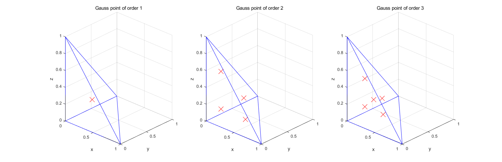
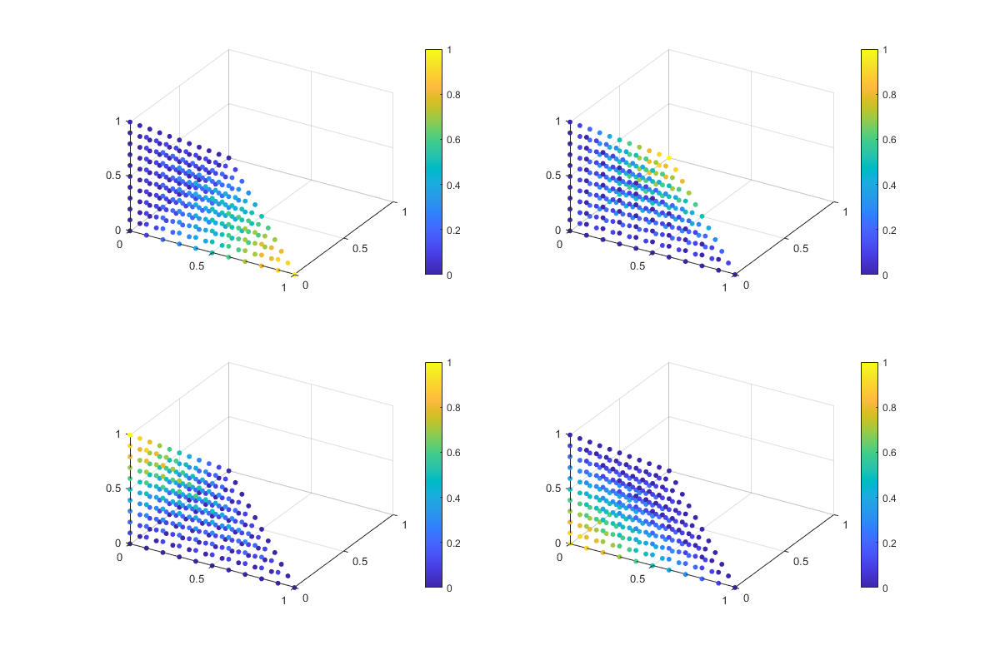
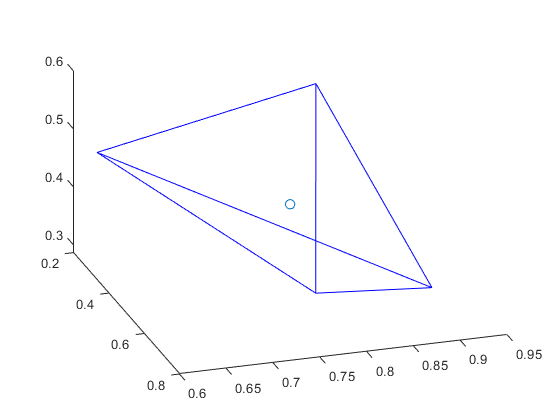
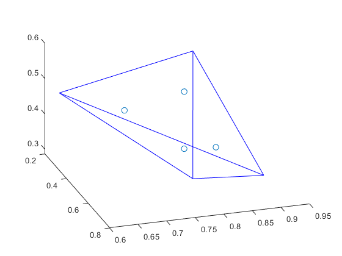
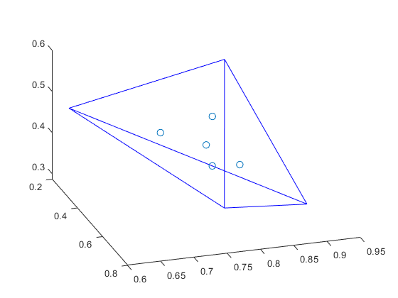

Contents
Draw tetrahedron and its gauss points
Contributed by Xiong
close all; clear; clc; % Tetrahedron vertex coordinates in isoparametric space x = [0 0 0; 1 0 0; 0 1 0; 0 0 1]; % Tetrahedral connection order ix=[1 2 3 4 1 3 4 2]; % Order nint=1:3; % define the gauss points cors and weight cell g and w g = cell(1,3); w = cell(1,3); % Calculate Gauss points of different orders for k=1:length(nint) [g{k}, w{k}] = Tet4Gp(k); end % Draw tetrahedron in isoparametric space for l=1:length(nint) subplot(1,3,l) patch('vertices', x, 'faces', ix, 'facecolor', 'none', 'edgecolor', 'b'); str = ['Gauss point of order ' num2str(l)]; MyPatch(x, ix, 'none', 'b', str, 'x', 'y', 'z'); % Draw gauss point of corresponding order (nint) hold on; plot3(g{l}(:,1), g{l}(:,2), g{l}(:,3), 'marker', 'x', 'color', 'r', 'linestyle', 'none', ... 'markersize', 16); % Fixed viewing angle view(43, 22); end set(figure(1),'Position',[0,220,1800,500]);
show shape function in isoparametric space
Contributed by OuYang
close all; clear; clc; % creat grid points [Xi_x,Xi_y,Xi_z]... = meshgrid(0:0.1:1,0:0.1:1,0:0.1:1); Xi_x = Xi_x(:); Xi_y = Xi_y(:); Xi_z = Xi_z(:); Xi = [Xi_x(:),Xi_y(:),Xi_z(:)]; % select the points inside and on the tetrahedron Xi = Xi((Xi_x + Xi_y + Xi_z) <= 1,:); % find the shape function of each node NumXi = size(Xi,1); N = zeros(NumXi,4); for i = 1:NumXi N(i,:)... = ShapeFun(Xi(i,:)); end % Draw the image of the shape function in the parameter function space for i=1:4 subplot(2,2,i) scatter3(Xi(:,1),Xi(:,2),Xi(:,3),20,N(:, i),'filled') view(31,38); colorbar() end set(figure(1),'Position',[300,100,1200,800]);
Draw the tetrahedron and Gauss point in real space
Contributed by OuYang, Xiong
clear; close all; clc; % Order nint = 1:3; % Draw a specific tetrahedron PraCor = [0.2511,0.3517,0.5497,0.7572; 0.6160,0.8308,0.9172,0.7537; 0.4733,0.5853,0.2858,0.3804]; % Find the dimensionality and node's number in input data [D,nnde] = size(PraCor); % Tetrahedral connection order ix =[1 2 3 4 1 3 4 2]; for k=1:length(nint) % Draw the tetrahedron in isoparametric space figure; patch('vertices', PraCor', 'faces', ix, 'facecolor', 'none', 'edgecolor', 'b') hold on % Calculate the coordinates (g) and number (ngp) of gauss points [g, w] = Tet4Gp(k); ngp = size(g,1); % Define gauss point matrix in real space GusCor = zeros(ngp,D); for i = 1:ngp % Calculate shape function value in the gauss point [N,~] = ShapeFun(g(i,:)); % Interpolate nodes to find Gauss points in real space GusCor(i,:) = (sum(N.*PraCor,2))'; end % Draw the position of the Gauss point in the tetrahedron in real space scatter3(GusCor(:,1),GusCor(:,2),GusCor(:,3),50) view(72,35); end  
jacobi test
clc
dN = [1 0 0;
0 1 0;
0 0 1;
-1 -1 -1];
% real TET4
x = rand(4,3);
% x = [0 0 0;
% 1 0 0;
% 0 1 0;
% 0 0 1];
% calculate the volume of real TET4
V = x-x(1,:);
V(1,:) = [];
Vol= abs(dot(V(1,:),cross(V(2,:),V(3,:))))/6;
str1 = ['Vol = ' num2str(Vol)];
disp(str1)
% from other
[J, detJ] = ShapeFunJacob(dN, x);
str2 = ['detJ = ' num2str(detJ/6)];
disp(str2)
if (abs(Vol)-abs(detJ)) <10^-9
disp('right');
else
disp('wrong');
end
Vol = 0.031807 detJ = 0.031807 right